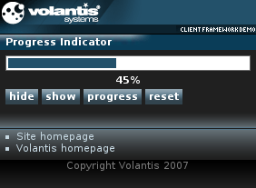

A Progress Bar widget provides a visual indication of the amount of a process that has been completed and the amount that remains. This prevents the user thinking that something has gone wrong when the server or client-side widget is busy. It also provides the user with some indication of how long they are likely to have to wait before the operation is completed.
A Progress Bar widget operates in one of two modes, active and passive. In active mode the widget periodically queries the server to obtain the latest percentage complete state. In passive mode the widget waits for one of its JavaScript methods or APE actions to be called.
We will demonstrate how to create a passive progress bar. Please see Active progress bar to learn about using AJAX with the Progress Bar widget.

<widget:progress id="myProgressBar" class="widget"/>
<widget:script id="hide">$W('progressBar').hide()</widget:script>
<widget:script id="show">$W('progressBar').show()</widget:script>
<widget:script id="progress"> $W('progressBar').progress(15);
$W('progressValue').setContent(String($W('progressBar').get()) + "%");
</widget:script>
<widget:script id="reset"> $W('progressBar').reset()
$W('progressValue').setContent(String($W('progressBar').get()) + "%");
</widget:script><widget:display id="progressValue"/>
<widget:button action="hide#invoke">hide</widget:button> <widget:button action="show#invoke">show</widget:button> <widget:button action="progress#invoke">progress</widget:button> <widget:button action="reset#invoke">reset</widget:button>
<mcs:handler id="onLoad" type="text/javascript">
$W('progressValue').setContent(String($W('progressBar').get()) + "%");
</mcs:handler>
<event:listener observer="body" handler="#onLoad" event="load"/>
<?xml version="1.0" encoding="UTF-8"?>
<html xmlns="http://www.w3.org/2002/06/xhtml2"
xmlns:mcs="http://www.volantis.com/xmlns/2006/01/xdime/mcs"
xmlns:event="http://www.w3.org/2001/xml-events"
xmlns:widget="http://www.volantis.com/xmlns/2006/05/widget"
xmlns:template="http://www.volantis.com/xmlns/marlin-template">
<head>
<title>Progress Indicator Widget</title>
<link rel="mcs:theme" href="/themes/main.mthm"/>
<link rel="mcs:theme" href="/themes/progressbar.mthm"/>
<link rel="mcs:layout" href="/layouts/main.mlyt"/>
<widget:script id="hide">$W('progressBar').hide()</widget:script>
<widget:script id="show">$W('progressBar').show()</widget:script>
<widget:script id="progress"> $W('progressBar').progress(15);
$W('progressValue').setContent(String($W('progressBar').get()) + "%");
</widget:script>
<widget:script id="reset"> $W('progressBar').reset()
$W('progressValue').setContent(String($W('progressBar').get()) + "%");
</widget:script>
<mcs:handler id="onLoad" type="text/javascript">
$W('progressValue').setContent(String($W('progressBar').get()) + "%");
</mcs:handler>
<event:listener observer="body" handler="#onLoad" event="load"/>
</head>
<body id="body">
<template:apply href="templates/demo-main.xdtpl">
<template:binding name="title" value="Progress Indicator"/>
<template:binding name="content">
<template:complexValue>
<widget:progress id="progressBar" class="widget"/>
<div id="progressValueDisplay">
<widget:display id="progressValue"/>
</div>
<div class="buttons">
<widget:button action="hide#invoke">hide</widget:button>
<widget:button action="show#invoke">show</widget:button>
<widget:button action="progress#invoke">progress</widget:button>
<widget:button action="reset#invoke">reset</widget:button>
</div>
</template:complexValue>
</template:binding>
</template:apply>
</body>
</html>| Name | Purpose |
|---|---|
| div | A section used to add extra structure to documents. Style sheets can be used to control the presentation. |
| event:listener | Declares an event listener and registers it with a specific element. |
| mcs:handler | Container for inline JavaScript content. It does not support nesting of handlers. |
| widget:button | A general purpose element, used by widgets which need a button-like control. |
| widget:display | An inline widget element used to display some text content. It may be associated with a widget property. In such cases, the displayed content represents the value of the selected property. |
| widget:progress | The main element for a Progress Bar widget. |
| widget:script | Contains a script that can be executed by the invoke action. |
| Core attributes | Attributes that are common to XDIME 2 elements. |